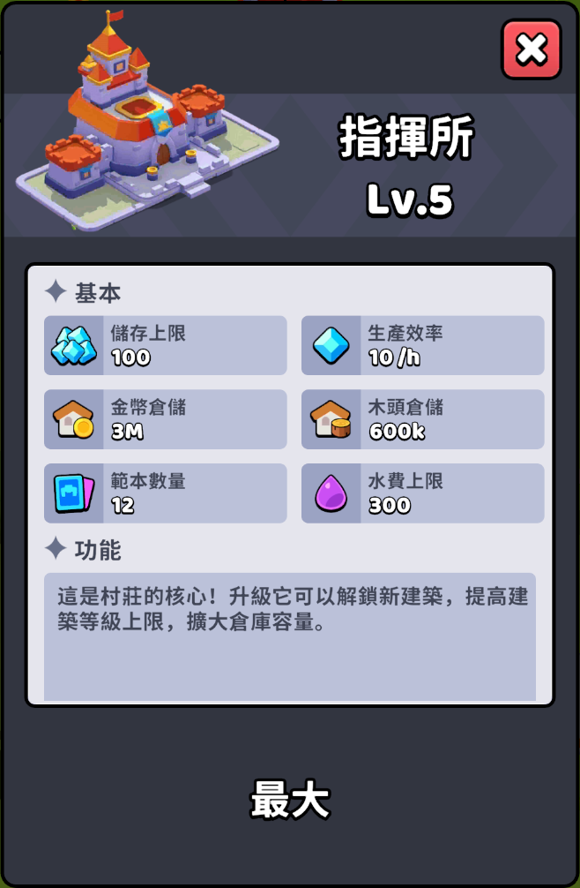
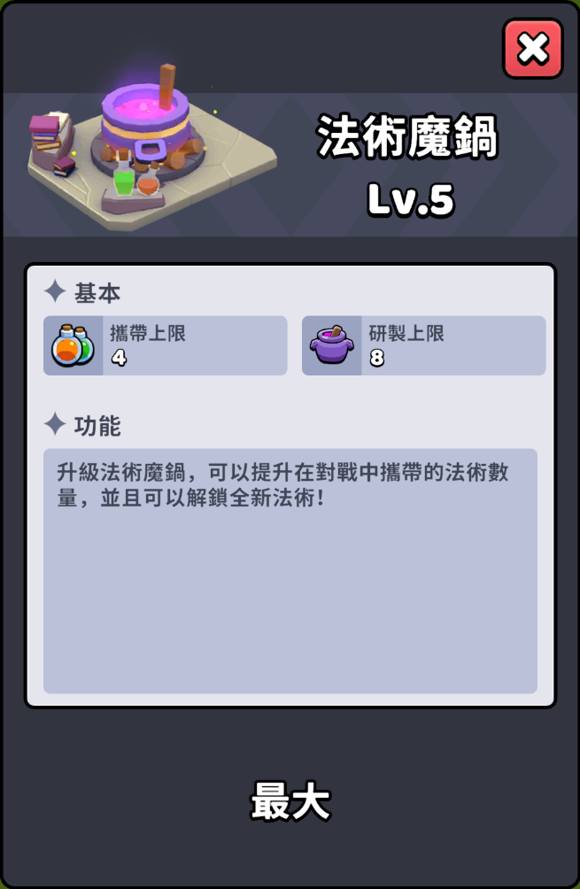
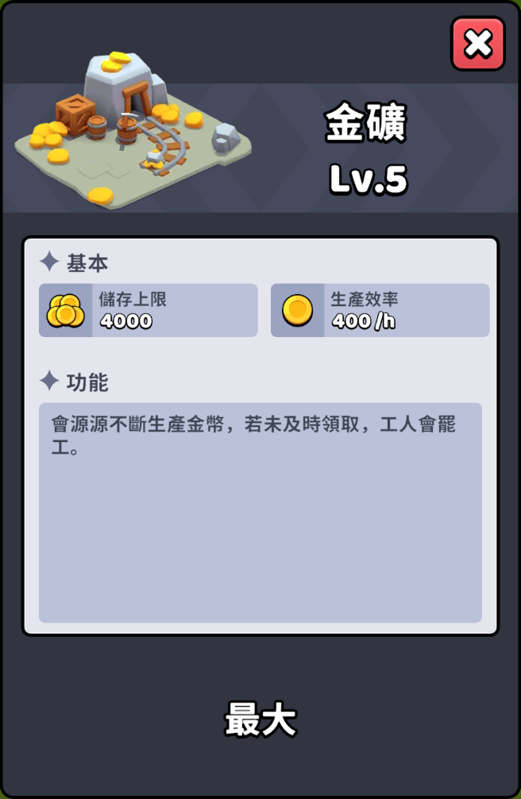
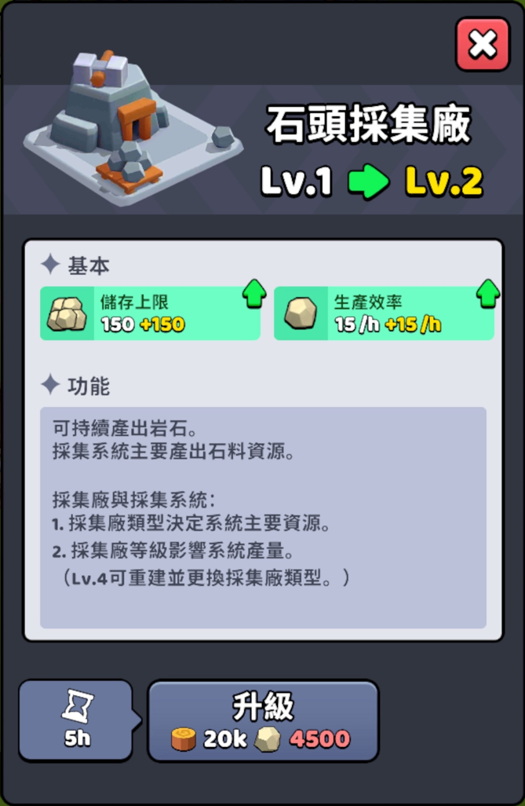

🏗️ 建築
建築總覽
🏯 指揮所

說明
指揮所是村莊的核心建築。所有其他建築物的等級上限，皆取決於指揮所的等級。升級至 2 至 3 級相對簡單；但升級至 4 級需要 5 個不同的傳奇單位，升級至 5 級則需要 5 個不同的神話單位。
🧪 法術魔鍋

說明
法術魔鍋的主要功能是解鎖競技場法術，並擴大戰鬥攜帶與研製上限。其中，治癒術會在升級至 2 級時解鎖，火球術則會在升級至 4 級時解鎖。此外，從 2 級升級至 5 級的每個等級，都會使法術的單次戰鬥攜帶量增加 1 點，同時研製上限量增加 2 點。
🍄 隨從營地

說明
隨從營地目前因隨從系統尚未完全開放，升級優先度較低。建議在木頭資源充裕時再進行升級。
🌲 伐木場

說明
作為基礎資源建築，建議僅在指揮所或其前置建築要求升級時，再進行對應等級的提升。
💰 金礦

說明
作為基礎資源建築，建議僅在指揮所或其前置建築要求升級時，再進行對應等級的提升。
⚙️ 新版本資源建築
木頭採集廠

石頭採集廠

說明
此為遊戲最新開放的資源建築類型。目前相關的升級數據、資源效率與機制仍在持續研究與收集中。
© 萌新軍本部 製作